Comment utiliser ce document
|
Plan de la séance 4
La diversité morphologique des bactéries
La structure de la cellule bactérienne
La réplication bactérienne : deux mécanismes distincts
La croissance exponentielle
La coloration de Gram
1. La diversité morphologique des bactéries
Malgré l'organisation cellulaire commune vue au cours 3, les bactéries se présentent sous une grande variété de formes. Cette forme — la morphologie — est souvent la toute première information qu'un microbiologiste observe au microscope, bien avant de connaître l'espèce exacte. Elle ne suffit jamais, à elle seule, à identifier une bactérie (plusieurs espèces très différentes partagent la même forme), mais elle oriente déjà les hypothèses. On distingue trois grandes familles : les coques (rondes), les bacilles (en bâtonnets), et un ensemble de formes spéciales.
1.1 Les coques (bactéries sphériques)
Un coque est une bactérie de forme sphérique. Ce qui distingue les différents arrangements de coques, c'est la façon dont les cellules restent groupées après leur division — un indice qui reflète directement le plan de division de la cellule mère : un diplocoque provient d'une seule division récente entre deux cellules restées collées; une chaîne (streptocoque) provient de divisions répétées dans un même plan; une grappe (staphylocoque) provient de divisions dans des plans irréguliers.
| Arrangement | Exemple de maladie |
|---|---|
| Diplocoque | Pneumonie |
| Streptocoque (en chaîne) | Angine / maux de gorge |
| Tétrade (groupe de 4) | Odeurs corporelles (ex. aisselles) |
| Staphylocoque (en grappes) | Sinusites, intoxications alimentaires |
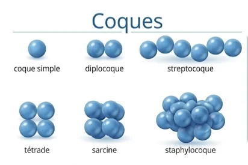 |
Figure 1.1 — Les arrangements de coques (le cours couvre diplocoque, streptocoque, tétrade et staphylocoque; coque simple et sarcine sont illustrés ici à titre de complément).
1.2 Les bacilles (bactéries en bâtonnets)
Un bacille est une bactérie allongée, en forme de bâtonnet — la forme la plus répandue chez les bactéries d'intérêt alimentaire vues dans ce cours (Salmonella, E. coli, Listeria, Clostridium en sont tous des exemples). Selon sa longueur et sa courbure, on distingue :
| Forme | Exemple de maladie |
|---|---|
| Coccobacille (bâtonnet court ou intermédiaire — entre coque et bacille) | Otites, méningites, coqueluche |
| Bacille droit | Botulisme, gastroentérite |
| Vibrion (bâtonnet courbé, en forme de virgule) | Choléra |
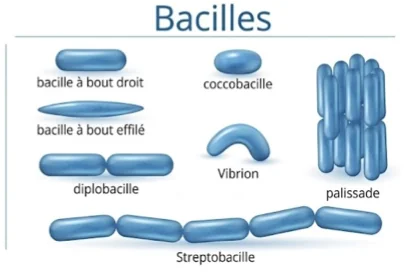 |
Figure 1.2 — Les arrangements de bacilles (le cours couvre coccobacille, bacille droit et vibrion; diplobacille, streptobacille, palissade et bacille à bout effilé sont illustrés ici à titre de complément).
1.3 Les formes spéciales
Au-delà des coques et des bacilles, certaines bactéries adoptent des formes plus particulières, souvent liées à un mode de vie précis — une meilleure pénétration dans un tissu, un déplacement plus efficace dans un liquide visqueux, ou simplement une variante structurale propre au genre.
| Forme | Exemple de maladie |
|---|---|
| Spiralée rigide (spirille) | Fièvre par morsure de rat |
| En massue | Diphtérie |
| Hélicoïdale | Ulcères gastriques, gastrite |
| Fusiforme | Gingivite |
| Filamenteuse | Produit des antibiotiques |
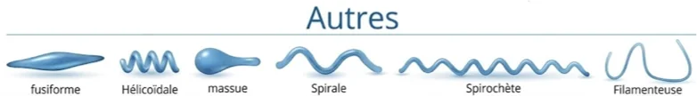 |
Figure 1.3 — Formes spéciales (l'image distingue « spirale » — rigide — et « spirochète » — une forme spiralée souple; le cours retient surtout « spiralée rigide »).
1.4 Tableau récapitulatif — principaux microorganismes alimentaires
Le tableau ci-dessous regroupe forme et pathogénicité (le résultat de Gram est repris à la section 5.3) pour les principaux microorganismes d'intérêt alimentaire vus dans ce cours — un bon aide-mémoire pour les laboratoires 4 et 6.
| Microorganisme / groupe | Pictogramme | Forme morphologique | Exemples de maladies / infections associées |
|---|---|---|---|
Bactéries lactiques | Chaînes (coques) / Bacilles | Généralement non pathogènes ; certains streptocoques : caries, infections opportunistes | |
Bactéries acétiques | Bacilles / Coccobacilles | Non pathogènes (altération des aliments) | |
Pseudomonas | Bacille droit | Pneumonie nosocomiale, infections cutanées | |
Entérobactéries | Bacilles | Infections urinaires, gastro-entérites | |
Salmonella | Bacille droit | Fièvre typhoïde, salmonellose, gastro-entérite | |
E. coli | Bacille droit / Coccobacille | Gastro-entérite, syndrome hémolytique et urémique | |
Staphylococcus aureus | Grappes (staphylocoques) | Sinusites, intoxications alimentaires, infections cutanées | |
Listeria monocytogenes | Bacille court | Listériose (méningite, septicémie) | |
Clostridium botulinum | Bacille sporulé | Botulisme | |
Clostridium perfringens | Bacille sporulé | Gangrène gazeuse, intoxications alimentaires | |
Bacillus cereus | Bacille sporulé | Intoxications alimentaires (vomissements, diarrhée) | |
Levures | Champignon unicellulaire (ovale) | Candidose, mycoses | |
Moisissures | Champignon filamenteux | Aspergillose, allergies |
Les levures et les moisissures n'ont pas de résultat de Gram : la coloration de Gram teste une paroi de peptidoglycane, une structure propre aux bactéries. Elles sont incluses ici à titre comparatif seulement (les mycètes seront vus en détail au cours 5-6).
À retenir — diversité morphologique
|
2. La structure de la cellule bactérienne
Le cours 3 a établi la distinction entre cellule procaryote et cellule eucaryote, et a listé rapidement les structures d'une bactérie typique. Cette section reprend cette cellule procaryote en détail : chacune de ses structures, obligatoires ou facultatives, et le rôle précis qu'elle joue.
2.1 Les structures de la cellule
Glycocalyx — couche externe qui entoure certaines bactéries; elle aide à retenir l'eau (protection contre la dessiccation) et à adhérer à des surfaces.
Flagelles — appendices filamenteux responsables de la locomotion (voir les quatre arrangements possibles, section 2.2).
Fimbriae — courts filaments qui permettent la fixation à une surface ou à une cellule hôte, sans jouer de rôle dans le mouvement.
Paroi cellulaire — couche de peptidoglycane qui donne sa forme à la cellule et la protège des chocs osmotiques; sa structure exacte détermine le résultat de la coloration de Gram (voir section 5).
Membrane plasmique — délimite le contenu cellulaire et régule les échanges avec l'extérieur.
Nucléoïde / Chromosome — région où se trouve l'ADN bactérien, une molécule unique et circulaire, sans membrane qui l'isole (pas de noyau vrai — voir cours 3).
Ribosome — structure responsable de la synthèse des protéines.
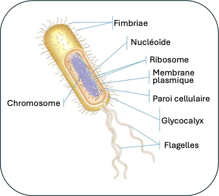 |
Figure 2.1 — Schéma annoté de la cellule bactérienne.
2.2 Les arrangements de flagelles
Le flagelle est le principal moyen de locomotion d'une bactérie. Son nombre et sa position à la surface de la cellule varient selon l'espèce et servent eux-mêmes de critère d'identification :
Monotriche — un seul flagelle, à une seule extrémité de la cellule.
Lophotriche — une touffe de plusieurs flagelles regroupés à une seule extrémité.
Amphitriche — un flagelle (ou une touffe) à chacune des deux extrémités.
Péritriche — des flagelles répartis tout autour de la cellule, sur toute sa surface.
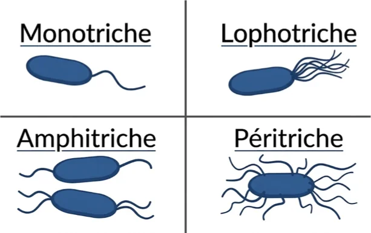 |
Figure 2.2 — Les quatre arrangements de flagelles.
À retenir — structure bactérienne
|
3. La réplication bactérienne : deux mécanismes distincts
Les bactéries ne se reproduisent pas de façon sexuée au sens où on l'entend chez les organismes supérieurs (pas de fusion de gamètes). Leur mode de reproduction normal est la fission binaire, un mécanisme purement clonal. Il existe toutefois un second mécanisme, la conjugaison, qui permet à deux cellules déjà existantes d'échanger du matériel génétique — un phénomène parfois qualifié, par analogie, de « quasi sexué ».
3.1 Reproduction asexuée — fission binaire (division cellulaire)
Mécanisme : multiplication clonale par division d'une cellule mère en deux cellules filles identiques — le mode de reproduction principal et quasi universel chez les bactéries.
Étapes clés : réplication de l'ADN → élongation cellulaire → formation du septum → finalisation de la division (formation de deux cellules distinctes) → séparation des cellules.
Ce mécanisme assure la croissance rapide et la propagation des populations bactériennes (voir section 4, croissance exponentielle).
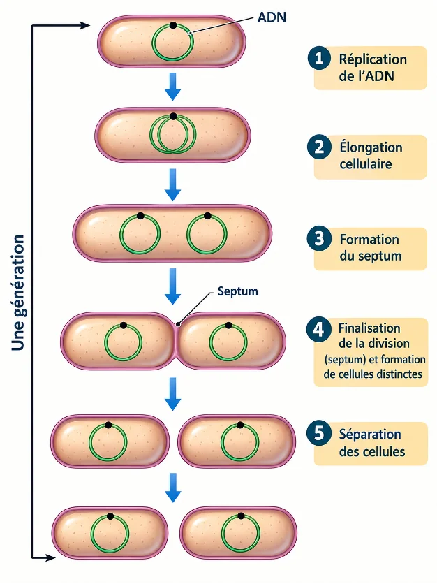 |
Figure 3.1 — La fission binaire, étape par étape.
3.2 La conjugaison bactérienne (« reproduction sexuée »)
Mécanisme : transfert unidirectionnel d'ADN, sous forme de plasmide, d'une bactérie donneuse (F⁺) vers une bactérie receveuse (F⁻).
Étapes clés : formation du pilus de conjugaison et contact avec la cellule receveuse → rapprochement des cellules et formation d'un pore de transfert → réplication en cercle tournant du plasmide dans la cellule donneuse → transfert d'un brin d'ADN plasmidique via le pore vers la cellule receveuse → complétion de la réplication plasmidique et séparation des deux cellules, désormais toutes deux F⁺.
Contrairement à la fission binaire, la conjugaison ne multiplie pas directement le nombre de cellules : elle génère de la variabilité génétique en échangeant du matériel entre deux cellules déjà existantes — exemple classique : la diffusion de la résistance aux antibiotiques d'une souche à l'autre.
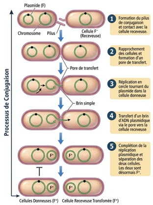 |
Figure 3.2 — La conjugaison bactérienne, étape par étape.
À retenir — réplication bactérienne
|
4. La croissance exponentielle
Puisque chaque division binaire transforme une cellule en deux, une population bactérienne croît de façon exponentielle (multiplication par 2 à chaque division) plutôt que de façon linéaire. Avec un temps de génération de 20 minutes — un rythme réaliste pour plusieurs bactéries en conditions favorables — une seule cellule donne 2 cellules après 20 min, 4 après 40 min, 8 après 1 h, et ainsi de suite.
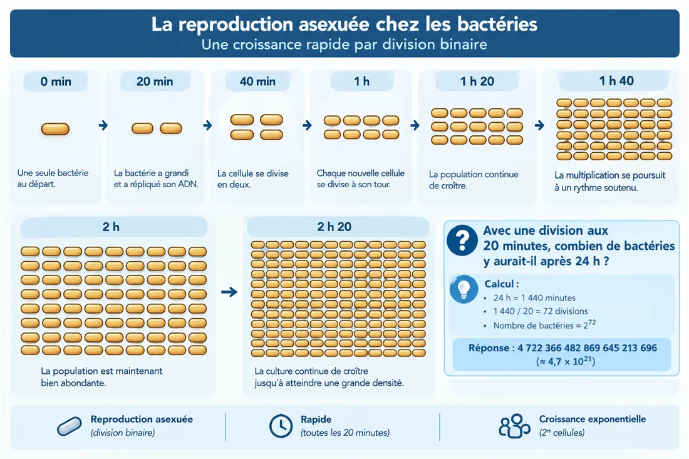 |
Figure 4.1 — Croissance d'une population par division binaire.
Exemple de calcul
Avec une division aux 20 minutes, combien de bactéries y aurait-il après 24 h, à partir d'une seule cellule de départ ?
24 h = 1 440 minutes
1 440 ÷ 20 = 72 divisions
Nombre de bactéries = 2⁷² = 4 722 366 482 869 645 213 696, soit environ 4,7 × 10²¹
Ce calcul illustre pourquoi le contrôle du temps et de la température (voir cours 3) est si déterminant en salubrité alimentaire : quelques heures dans une zone de température favorable suffisent, en théorie, à faire exploser une population au-delà de tout seuil sécuritaire. En pratique, la croissance ralentit avant d'atteindre un tel nombre (épuisement des nutriments, accumulation de déchets), mais l'ordre de grandeur reste frappant.
À retenir — croissance exponentielle
|
5. La coloration de Gram
Mise au point en 1884 par le bactériologiste danois Hans Christian Gram, cette technique reste aujourd'hui l'une des façons les plus rapides d'orienter l'identification d'une bactérie inconnue, bien avant d'avoir recours à des tests plus poussés comme une galerie biochimique. Elle repose sur quatre réactifs appliqués dans un ordre précis, et sépare la grande majorité des bactéries en deux groupes selon la structure de leur paroi.
5.1 Les quatre réactifs, dans l'ordre
1. Violet de gentiane (colorant primaire)
Action : coloration initiale de toutes les bactéries.
Mécanisme : le colorant pénètre le peptidoglycane et la membrane plasmique de toutes les cellules.
Résultat visuel : toutes les bactéries sont violettes (Gram+ et Gram−).
2. Lugol / Iode (mordant)
Action : fixation et stabilisation de la couleur.
Mécanisme : l'iode réagit avec le violet de gentiane pour former de grands complexes (iode-violet) insolubles dans l'eau.
Résultat visuel : toutes les bactéries restent violettes, mais le colorant est désormais piégé dans la paroi.
3. Alcool 95 % (étape de décoloration clé)
Action : différenciation basée sur la structure de la paroi bactérienne.
Mécanisme : chez les Gram+, l'alcool déshydrate l'épaisse couche de peptidoglycane, resserrant les mailles et emprisonnant le complexe violet; chez les Gram−, il dissout la membrane externe riche en lipides et traverse facilement la fine couche de peptidoglycane, extrayant le complexe violet.
Résultat visuel : Gram+ = violettes; Gram− = incolores.
4. Safranine (contre-colorant)
Action : fixation et stabilisation de la couleur finale.
Mécanisme : colorant rosé/rouge qui pénètre toutes les cellules, mais qui ne masque pas le violet dense déjà présent chez les Gram+.
Résultat visuel : Gram+ restent violettes (paroi épaisse de peptidoglycane, déjà saturée de complexe violet); Gram− deviennent roses/rouges (paroi fine + membrane externe lipidique, décolorée à l'étape 3, qui reprend alors la couleur de la safranine).
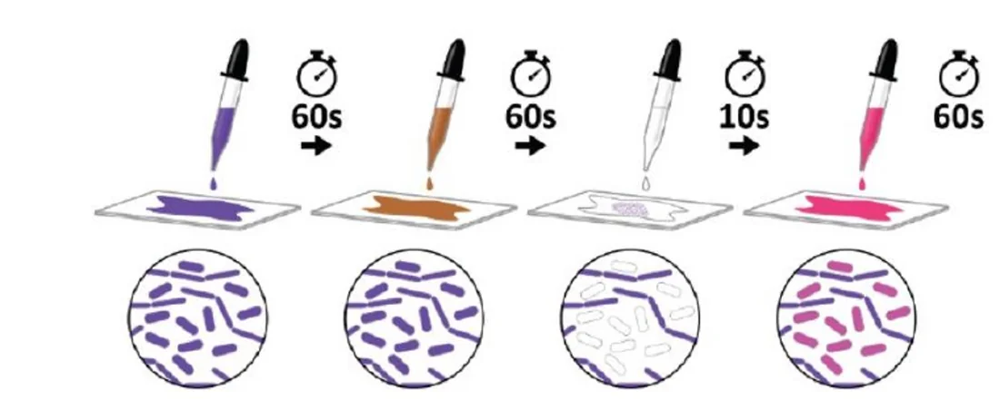 |
Figure 5.1a — Les quatre réactifs appliqués en séquence, avec l'aspect microscopique après chaque étape.
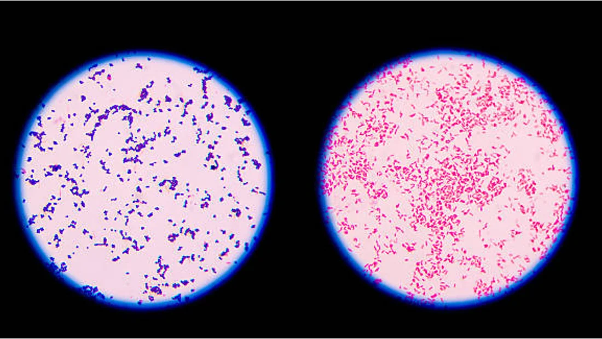 |
Figure 5.1b — Résultat réel au microscope : Gram+ (violet) à gauche, Gram− (rose) à droite.
5.2 La structure de la paroi qui explique tout
| Enveloppe Gram positif | Enveloppe Gram négatif | |
|---|---|---|
| Couche externe | Paroi épaisse de peptidoglycane, traversée par des acides téichoïques et lipotéichoïques | Membrane externe (porines, lipoprotéine de Braun, lipopolysaccharide [LPS] avec sa chaîne latérale O) |
| Sous la couche externe | — | Fine couche de peptidoglycane |
| Espace périplasmique | Peu marqué | Bien défini, entre la membrane externe et la membrane plasmique |
| Membrane plasmique | Phospholipides + protéines intrinsèques | Phospholipides + protéines intrinsèques (identique en principe) |
| Conséquence sur le Gram | Complexe violet piégé dans l'épaisse paroi → reste violette | Membrane externe lipidique dissoute par l'alcool, complexe violet extrait à travers la fine paroi → devient rose/rouge |
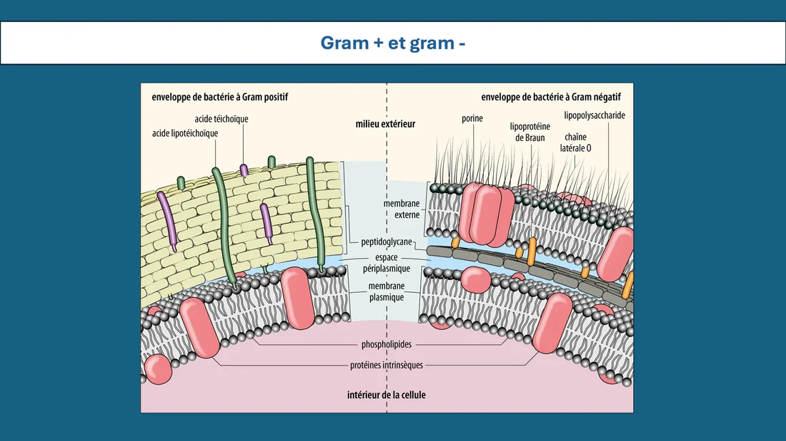 |
Figure 5.2 — Structure comparée des enveloppes Gram+ et Gram−.
Le lipopolysaccharide (LPS) de la membrane externe des Gram− est aussi connu sous le nom d'endotoxine : c'est une composante structurale de la paroi elle-même, libérée surtout à la mort ou à la lyse de la cellule plutôt que sécrétée activement.
5.3 En résumé
| Gram positif (violet) | Gram négatif (rose/rouge) | |
|---|---|---|
| Colorant retenu au final | Violet de gentiane (complexe iode-violet piégé) | Safranine |
| Épaisseur de peptidoglycane | Épaisse | Fine |
| Membrane externe | Absente | Présente (porines, LPS) |
| Effet de l'alcool 95 % | Déshydrate et resserre la paroi → retient le complexe violet | Dissout la membrane externe → extrait le complexe violet |
| Microorganisme / groupe | Pictogramme | Forme morphologique | Gram + violet | Gram − rose / rouge |
|---|---|---|---|---|
Bactéries lactiques | Chaînes (coques) / Bacilles | ✓ | ||
Bactéries acétiques | Bacilles / Coccobacilles | ✓ | ||
Pseudomonas | Bacille droit | ✓ | ||
Entérobactéries | Bacilles | ✓ | ||
Salmonella | Bacille droit | ✓ | ||
E. coli | Bacille droit / Coccobacille | ✓ | ||
Staphylococcus aureus | Grappes (staphylocoques) | ✓ | ||
Listeria monocytogenes | Bacille court | ✓ | ||
Clostridium botulinum | Bacille sporulé | ✓ | ||
Clostridium perfringens | Bacille sporulé | ✓ | ||
Bacillus cereus | Bacille sporulé | ✓ | ||
Levures | Champignon unicellulaire (ovale) | Sans objet (pas de peptidoglycane) | ||
Moisissures | Champignon filamenteux | Sans objet (pas de peptidoglycane) | ||
Tableau 5.3 — Le résultat de Gram pour chacun des microorganismes de la section 1.4 (à comparer avec le tableau de la tableau de la section 1.4).
À retenir — coloration de Gram
|
Résumé général
Les bactéries se répartissent en trois grandes familles de formes : coques, bacilles et formes spéciales — un premier indice d'identification, jamais suffisant à lui seul.
La cellule bactérienne obligatoire comprend la paroi, la membrane plasmique, le nucléoïde et les ribosomes; le glycocalyx, les fimbriae et les flagelles sont facultatifs.
Les flagelles se présentent selon quatre arrangements (monotriche, lophotriche, amphitriche, péritriche), eux aussi utiles pour l'identification.
La fission binaire (asexuée) est le mode de reproduction normal des bactéries : une cellule devient deux, en 5 étapes.
La conjugaison bactérienne échange du matériel génétique (plasmide) entre deux cellules existantes, sans augmenter directement la population — mécanisme clé de la propagation de la résistance aux antibiotiques.
Une division aux 20 minutes produit une croissance exponentielle (2ⁿ) : en 24 h, une seule cellule peut théoriquement donner 2⁷² descendantes.
La coloration de Gram distingue deux grands groupes de bactéries selon l'épaisseur de leur paroi de peptidoglycane et la présence ou non d'une membrane externe, à l'aide de quatre réactifs appliqués en séquence.
Ce résultat Gram+/Gram− est l'un des tout premiers renseignements recueillis sur une bactérie inconnue, et sera repris comme critère d'identification tout au long de la session (laboratoires 4 et 6).
Pour la suite du cours Le cours 5-6 quittera le monde procaryote pour explorer les eucaryotes microbiens : les mycètes (levures et moisissures — reproduction, espèces utiles versus nuisibles, détection MAPAQ) et les virus (morphologie, matériel génétique, réplication, détection par PCR ou ELISA). Ces organismes sont structurellement très différents des bactéries vues ici, mais tout aussi importants en salubrité alimentaire. |